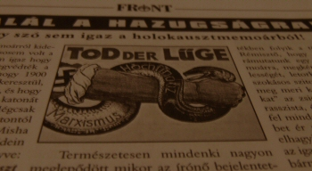

Pár héttel ezelőtt, egy barátom hívta fel rá figyelmem, hogy az
„
Egy
szó sem igaz a holokausztmemoárból” című írásom, nyomtatásban is megjelent, méghozzá a
jónevű
Front magazin hasábjain. Mivel ez az
első komoly cikkem mely nyomtatásban is megjelent, úgy döntöttem beszerzek egy példányt ebből a
lapból. Azonban augusztus végén nemigen lehet az újságosoknál júniusi újságot kapni, ezért
felvettem a kapcsolatot az
MNF főszerkesztőjével, akivel aztán váltottunk pár baráti
hangvételű levelet, melyből megtudtam, hogy az
MNF irodáját a
Magyarok Házában ( Semmelweis u. 1-3 1052) megtalálom, és ott
biztos hozzájutok az említett újsághoz.
De mivel túl korán mentem, úgy döntöttem benézek
még az Emese Álma nevezetű nemzeti könyvesboltba, ami az Örsön található. Találtam is rengeteg
érdekes könyvet, de mivel jelenleg nincs erre költhető pénzem, üres kézzel, és fájó szívvel
indultam vissza a Magyarok Házába. A földszinten segítőkészen útbaigazítottak. III. emelet, 336.
Beléptem, és kértem két példányt a Front magazin júniusi számából, majd odaadtam a pénzt. Már
mehettem is volna kifelé, de a hölgy olyan kedvesen kínált hellyel, hogy leültem. Ekkor tűnt csak
fel, hogy a helyiség melyben voltam, telis-tele volt könyvekkel.
- Régebben rengeteg tagja
volt a könyvtárunknak, de mostanában alig vannak.
- Ó, szóval ez könyvtár is? – kérdeztem
csodálkozva.
- Igen, az.
- Hm, és mennyi a tagdíj? – morfondíroztam a rengeteg érdekes
könyvet szemlélve.
- 350 Forint.
Gondoltam, ha a havidíj 350 Forint, akkor én bizony
most azonnal kérek egy tagságit. De rosszul gondoltam, mert nem a havidíj volt 350 Forint, hanem
az éves díj. Ezek után gondolhatjátok hogy azonnal kértem egy tagsági kártyát.
Míg a
tagsági kártyámat készítették, megkérdezték milyen könyv érdekelne. Mivel már évek óta vadászom a
Ku Klux Klan története c. könyvre, gondoltam hátha itt szerencsével járok. Hát nem jártam, de a
hölgyek már ebből kitalálták miféle könyvek érdekelnének engem. És TÉNYLEG tudták mi érdekel!
Ezután temérdek könyvet ajánlottak, de mivel jelenleg is olvasok egy könyvet (
Prohászka Ottokár Püspök: Az én antiszemitizmusom) úgy
döntöttem inkább néhány dvd-t viszek. Le is csaptam az
Örök
zsidóra – mármint a filmre – magyar feliratos formában. Az eredeti címe
egyébként:
Der ewige Jude. Ezenkívül kivettem még a
Miért vérzik a Közel-Kelet c. dvd-t, és
Tudós Takács János: A Hungarizmus szellemi alapjai című előadássorozatának első
két részét. Miután elpakoltam a dvd-ket, tovább beszélgettem a hölgyekkel, akik elpanaszolták
milyen kevés lány jár a könyvtárukba. Szinte nincsenek is. Majd azt is megállapítottuk, hogy úgy
egészében a nemzeti oldalon jóval kevesebb a nő mint a férfi. De ezt most hagyjuk, erről majd
valamikor máskor írok nektek.
Miközben beszélgettünk, betoppant Szilágyi Mihály úr, aki
azonnal be is kapcsolódott a beszélgetésbe. A nevét onnan tudom, hogy mikor belépett kezet rázott
velem, és bemutatkozott. Rendkívül jól esett ez, nem szoktam meg, hogy ilyen kedvesek és
közvetlenek legyenek velem nálam jóval idősebb emberek.
Egyáltalán ahhoz sem szoktam
hozzá, hogy ha bemegyek egy boltba vagy könyvtárba, magáznak és kedvesek velem. Míg az egyszerű
könyvesboltokban az eladó unott pofával vánszorog ki a pult mögül, ha kérsz valamit, a nemzeti
boltokban (és nem csak a könyvesboltokban) az eladó, vagy alkalmazott hangosan mosolyogva köszönt
mikor belépsz. Ha kérdésed van, készséggel válaszol. Ha kérésed van, mindent megtesz, hogy
segíthessen. Emlékszem mennyire meglepett, mikor még nem ismertük egymást Tomcattel, hogy kezet
rázott velem, mikor beléptem a boltjába, és kedvesen üdvözölt. Ilyen dolgok csakis nemzeti boltokban
történnek az emberrel. Teljesen más világ, mint az egyéb boltok. Össze sem lehet hasonlítani. És
ami igazán meglepő, az az, hogy nemzeti boltokban akkor is kedvesek az emberrel, ha nem vesz
semmit, míg a nem-nemzeti boltokban, csak akkor leszünk fontos emberek, ha drágán vásárolunk. Nem
így a nemzeti boltokban! Ott minden magyar fontos! A könyvtáros hölgyek segítőkészségétől is
szinte már zavarba jöttem. Összesen 750 Forintot hagytam ott, mégis úgy bántak ott velem, ahogy
más könyvtárakban talán csak valami nagyon gazdag ország nagykövetével bánhatnak.
Apropó
más könyvtár. Szóba került a Fővárosi Szabó Ervin könyvtár. Elmeséltem, hogy ugyan ott sokkal több
könyv van, de ilyen témájú egy darab sincs. Történelmi, politikai könyvekből, ott kizárólag
polkorrektet kapunk, azt viszont minden mennyiségben. Szilágyi Mihály úr pedig elmondta nekünk,
hogy ezen ne is csodálkozzunk, ugyanis nemcsak a főnök ballib, de szinte az egész személyzet is.
Ezek után nem is csodálkozom a talajbunkó raszta alkalmazottjukon. Egyszer valamelyik hazafias
magazin, jófejségből felajánlott egy teljes évadot a könyvtár számára, azonban a főnök
megtiltotta, hogy azokat az újságokat kitegyék. A szólásszabadság nevében persze.
Ezután
még kedélyesen beszélgettünk a fiatalságról, arról hogy milyen jó volt a Magyar Sziget, és hogy
milyen pocsék egy magyarellenes baromság ez a Sass kabaré. Szilágyi Mihály úr pedig még jódarabig
mesélt arról, milyen érdekes előadások szoktak itt lenni a Magyarok Házában. Meg minden másról
is.
Szóval teljesen elégedetten távoztam a
Magyar Nemzeti Front irodájából, és könyvtárából. Ezúton
szeretném ajánlani a beiratkozást mindenkinek, akinek nincs pénze arra, hogy megvásárolja a
számára fontos könyveket. Évi 350 Forintból hatalmas tudásanyaghoz juthatunk. Temérdek könyv, dvd,
cd, segítőkész és végtelenül kedves könyvtáros hölgyek. Mi kell még? Semmi kérem, ez már így is
túl jó ajánlat.
Mivel azonban jó kapcsolatot ápolunk több nemzeti könyvkiadóval, és
könyvesbolttal is, szeretném valami fontosra felhívni a figyelmeteket. A
Magyar Nemzeti Front könyvtára
nagyszerű lehetőség, de ne éljünk vissza ezzel, a nemzeti könyvkiadók, és könyvesboltok kárára.
Akinek van rá pénze, hogy megvegye az őt érdeklő könyveket, az vegye meg! Ne feledd, ilyen könyvek
vásárlásával mindig tisztességes, a mi oldalunkon álló
AKTÍV embereket támogatsz. Ráadásul a könyv – ha vigyáznak rá – örök
érték. Ahogy az évek során eltűnt a VHS kazetta, úgy el fog tűnni a CD és a DVD is. De a könyv
örök! És azt se feledjétek, hogy a nemzeti könyvkiadók tulajdonosai a befolyt pénzből nem
egzotikus utakra mennek és koktélt iszogatnak, hanem újabb könyveket adnak ki, és gyártanak le. Ne
sajnáljátok ezért a pénzt könyvre! Ráadásul nekik is meg kell élni valamiből, és azoknak is akik
azokat a könyveket írják, és lefordítják. Ha nem veszitek az ilyen könyveket, idővel nem lesz
több.
Támogassátok tehát a nemzeti könyvkiadókat, és
könyvesboltokat!Mikor kifelé tartottam, a könyvtáros hölgy utánamszólt:
”Fiatalember! Kérem, majd azért szóljon pár barátjának a mi
könyvtárunkról! Segítenünk kell a fiataloknak, hogy ráleljenek az
igazságra.”Nos, azt hiszem megtettem, amit a hölgy kért. Most pedig megyek
olvasni.
update: 1. A kölcsönzésért nem kell pluszban fizetni. Egy hónapra lehet kikölcsönözni könyvet, dvd-t, de ha nem tudod vagy nem akarod még visszavinni, elég betelefonálni.
2. Az irodában polgári nevemen mutatkoztam be, tehát fogalmuk sem volt róla hogy én vagyok Főnix. Tehát ez a bánásmód náluk alap, nem kivételeztek velem.
3. Az MNF irodája és könyvtára keddenként és csütörtökönként délután 3 órától este 7-ig látogatható. (Ennek majd utánajárok, mert nem biztos hogy így van.)